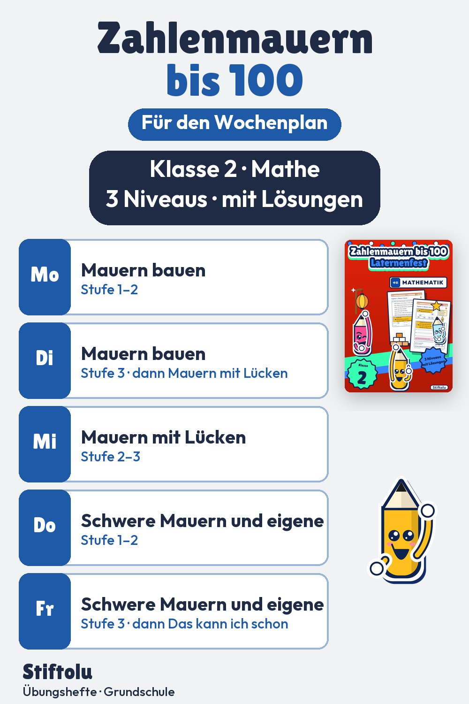

Werbung · Übungsheft von Stiftolu
Zahlenmauern bis 100 zum Laternenfest – Übungsheft für Klasse 2

Der Stein über zwei Nachbarsteinen ist die Summe: 30 + 20 = 50. Wie das funktioniert, üben Kinder in Klasse 2 mit Laternenmauern im Zahlenraum bis 100. Fehlende Steine werden ergänzt oder mit der Umkehraufgabe 50 − 30 = 20 gefunden. Zwei Lösungswörter gibt es dazu; die 54 Seiten sind erhältlich auf eduki.